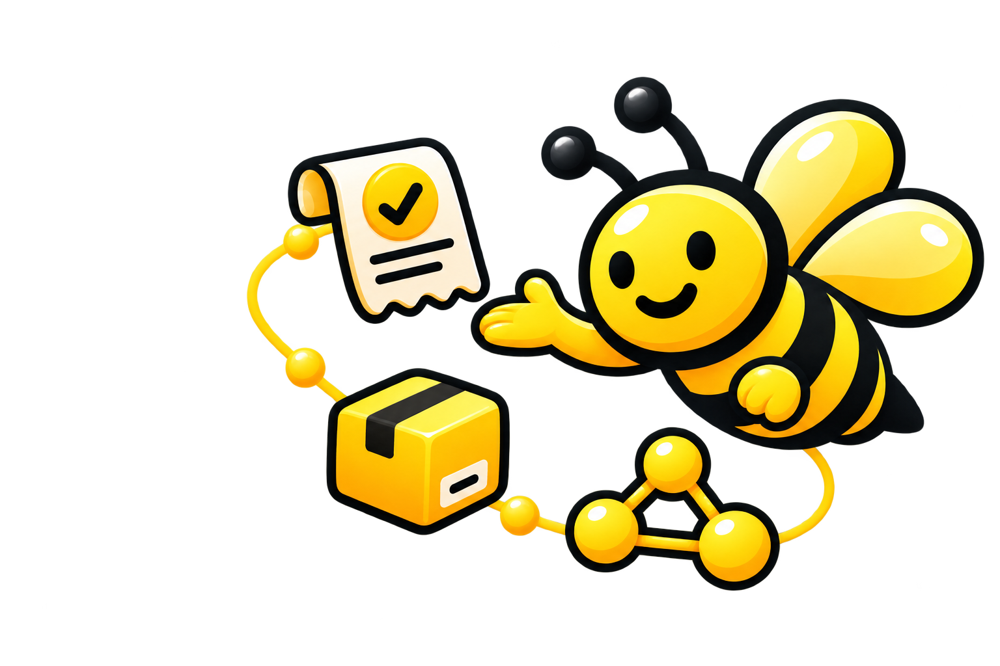
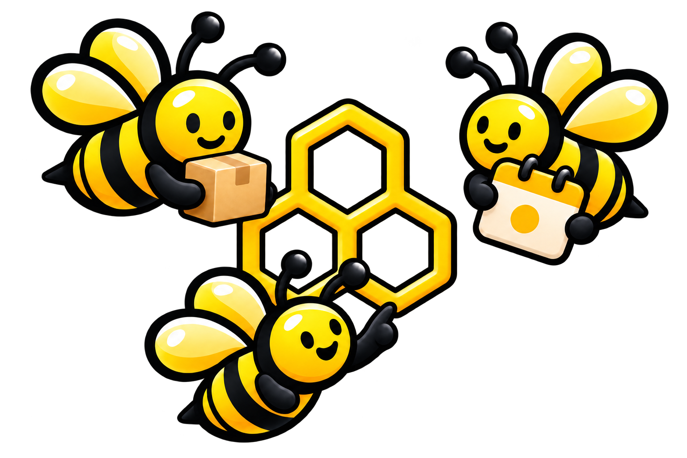

Gestión inteligente para pymes
Tu negocio, más claro.
Tus decisiones, mejor conectadas.
Registra ventas, cuida tu inventario, entiende tus números y conecta con otras pymes desde un solo lugar.
- Ventas
- Inventario
- Diagnóstico
- RED Pymio

Todo en una mirada.
Reponer inventario3 productos con stock bajo
RevisarVentas al díaSin registros pendientes
ListoTu operación diaria
Registra hoy.
Decide con contexto.
Ventas, compras y movimientos de inventario viven en un mismo flujo. La información se ordena mientras trabajas, sin convertir tu negocio en una planilla más.
- Movimientos simplesRegistra ventas y compras con lo esencial.
- Inventario conectadoEl stock se actualiza junto con tu operación.
- Resumen útilVe primero los datos que requieren una decisión.
15 disponibles · 3 por revisar
HallazgoLos viernes concentran más ventas
OportunidadPlanifica stock antes del jueves
Diagnóstico
Tus datos dejan de ser una lista.
Pymio ordena lo que ocurre en tu negocio y lo convierte en señales claras. Así puedes detectar patrones, anticiparte y decidir con una mirada completa.
Explorar el diagnósticoRED Pymio
Tu negocio también crece acompañado.
Crea tu vitrina, descubre otros emprendimientos y participa en comunidades, eventos y beneficios dentro de la red.
Conocer la red
Una ruta simple
De registrar lo que ocurre
a decidir qué hacer.
Pymio acompaña el trabajo diario sin pedirte cambiar la forma en que entiendes tu negocio.
- 1Registra
Guarda ventas, compras y productos desde un flujo directo.
- 2Comprende
Revisa resúmenes y hallazgos que ordenan tus datos.
- 3Conecta
Presenta tu negocio y encuentra comunidad en RED Pymio.
Tu espacio de trabajo
Empieza con una buena mirada.
Reúne tu operación, tu inventario y las decisiones importantes en un solo lugar.
Entrar a Pymio